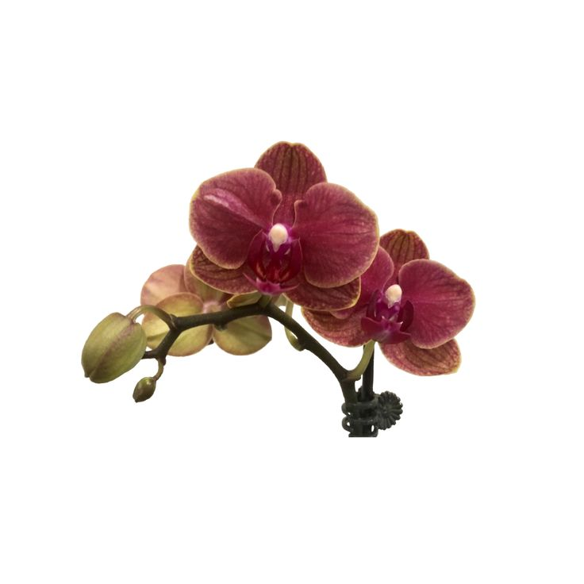
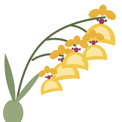
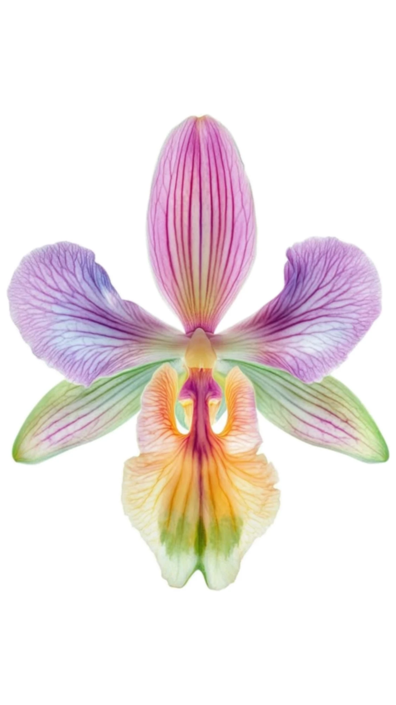

Making more
of them
An orchid pod can hold a million seeds and still, in the wild, produce almost nothing. Everything humans have done with this family for the last century has been an attempt to improve those odds.
The kitchen-table methods
no laboratory requiredKeikis
Keiki is Hawaiian for baby, and that is exactly what it is: a complete miniature plant that sprouts from a node on a flower spike, or from a cane. It is a clone — genetically identical to its parent — and it is the easiest orchid you will ever propagate.
Moth orchids and Dendrobiums do it most readily, often when the parent has been a little stressed. Leave it attached until it has grown two or three roots of about 5 cm, plus a couple of leaves. Then cut the spike a centimetre either side of the keiki, pot it in fine bark in a small pot, and keep it a bit more humid than usual for a month. Expect flowers in one to two years.
You can also force one: keiki paste, a cytokinin hormone cream, dabbed onto a node on a spent spike will often push out a plantlet instead of a branch. It works. It also takes a lot out of the parent, so do it to a strong plant or not at all.
Division
For sympodial orchids — anything with pseudobulbs creeping along a rhizome — division is simply cutting the creature in half. Do it at repotting time, with a sterile blade, cutting through the rhizome between bulbs.
The rule that matters: leave at least three or four pseudobulbs per division. Below that, the piece has no reserves and will sit and sulk for years, if it survives at all. Older leafless bulbs at the back — back bulbs — can also be potted up on their own; many will eventually push a new shoot from a dormant eye.
Top cuttings
Monopodial orchids grow as one endless stem, so the only way to divide one is to behead it. On a tall, leggy Vanda with plenty of aerial roots, cut the top third off below three or four good roots and pot it up. The stump usually responds by producing new shoots lower down, and you end up with two plants. This is not for the nervous.
- New razor blade, or a blade held in a flame until it glows
- Cut in the growing season, not mid-winter
- Dust every cut surface with ground cinnamon — a decent, cheap fungicide
- Keep the divisions slightly dry for a week afterwards
- Label them. You will not remember. Nobody remembers.

nodes, for keikis
pseudobulbs, for dividinga pod is a lottery ticket
bought a million times over.
Seed, and the fungus problem
Sowing orchid seed the way you sow a bean does not work, and for the whole of the nineteenth century nobody knew why. Growers scattered seed round the base of the mother plant and occasionally, mysteriously, something came up.
Between 1899 and his death in 1911 the French botanist Noël Bernard worked out the answer: the seed is not self-sufficient. It has no endosperm, no packed lunch. In the wild it germinates only when a compatible mycorrhizal fungus finds it, penetrates it, and feeds it sugars — sometimes for years — until the seedling has leaves of its own and can start paying rent.
That single fact explains a great deal: why orchids are so often rare, so tied to particular habitats, and so hopeless at recolonising ground once they've been dug out of it.
The workaround
In 1922 Lewis Knudson at Cornell showed you could skip the fungus entirely by giving the seed what the fungus would have given it. Sterilised seed, a jar, a jelly of agar with sugar and mineral salts, and light: asymbiotic germination. Orchids stopped being impossible to raise and became merely slow.
This is still how it is done. Sterile technique is the whole game — a single mould spore in the flask and the sugar jelly becomes a mould farm within days.
Seed to flower, step by step
bring a long attention span| Stage | What happens | Roughly |
|---|---|---|
| Pollination | Pollinia lifted from one flower with a toothpick and pressed onto another's stigma | One minute |
| Pod | The ovary swells and ripens. Harvested green, just before it splits | 4–12 months |
| Sowing | Seed surface-sterilised and sown onto sterile agar in a flask, under still air | An afternoon |
| Protocorms | Seed swells into green pinhead bodies — not yet root or shoot, just possibility | 2–8 weeks |
| Replating | Crowded seedlings moved to fresh flasks with more room and richer medium | 6–12 months |
| Deflasking | Seedlings washed free of jelly and potted into fine bark or moss. The riskiest day of their lives | One day, then months of nerves |
| Growing on | Small pots, then bigger ones, until the plant has the mass to bloom | 1–4 years |
| First flower | And you finally find out what you made | 2–7 years from sowing |
The clone that changed the price
Seed gives you variation, which is wonderful if you are a breeder and useless if you are a nursery trying to sell ten thousand identical white orchids to ten thousand identical supermarkets.
In 1960 the French plant physiologist Georges Morel published a method for growing orchids from meristem tissue — the tiny knot of undifferentiated cells at a growing tip. Cut it out, drop it into liquid medium, keep it moving, and it multiplies into a lump of unspecialised tissue that can be divided again and again, each piece then grown on into a complete plant.
The result is a mericlone: thousands of plants genetically identical to one chosen individual. It is the reason an orchid on a supermarket shelf costs about the same as a bunch of tulips.
In 1890 an orchid could cost more than a house in the country. In 1990 it cost less than a takeaway. Between those two numbers sits a man with a scalpel and a flask.
Making a hybrid
The first artificial orchid hybrid was raised by John Dominy at the Veitch nursery in Exeter, and flowered in 1856 as Calanthe Dominyi. The response from botanists at the time was somewhere between delight and horror; one is supposed to have said that Dominy would drive them all mad.
He rather did. There are now more than a hundred thousand registered orchid grexes, each one a named cross, recorded in an international register kept by the Royal Horticultural Society. Anyone who makes a new cross can register it and name it — which is why the orchid world is full of plants named after somebody's mother.

1856 — first artificial hybrid flowers at Veitch's nursery.
1899–1911 — Noël Bernard identifies the fungal partnership.
1922 — Knudson's sugar-agar medium; seed raised without fungi.
1960 — Morel's meristem cloning; identical plants by the thousand.
Now — flasks of seedlings arrive by post, and rescuing wild-collected plants is no longer any kind of excuse.
Leave wild orchids where they are
Every orchid species on earth is listed under CITES, the international convention on trade in endangered species — the whole family, all at once, which is a distinction almost nothing else has. Some, including many slipper orchids, sit in the strictest category of all.
Wild collection has emptied real hillsides. It is also pointless: a wild-dug plant has lost its fungal partner, its climate and most of its roots, and usually dies within a year in a living room. A nursery-raised seedling of the same species will outgrow it, outlive it, and cost less.
So: buy from growers who flask their own or buy from those who do, keep the label, and if a deal looks too good and the plant looks too old, it was dug up.